Owners
Give customers a clean place to check before they choose.
Claim the profile, keep your menu and schedule current, and share one link that makes your truck easier to trust.
See owner toolsFor food truck owners
Claim your public profile, show your menu and schedule, connect your socials, and give customers one trustworthy place to check before they drive somewhere else.
Owner onboarding
Find and claim your profile in about a minute. Start with your truck name, email, and mobile number. We’ll guide the secure handoff.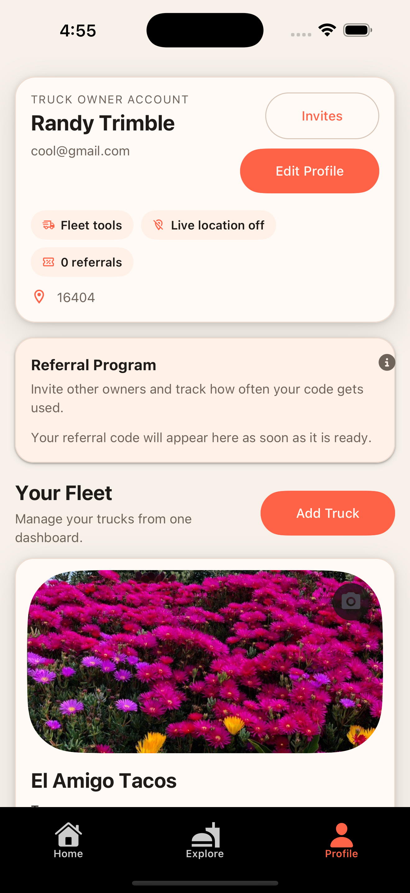
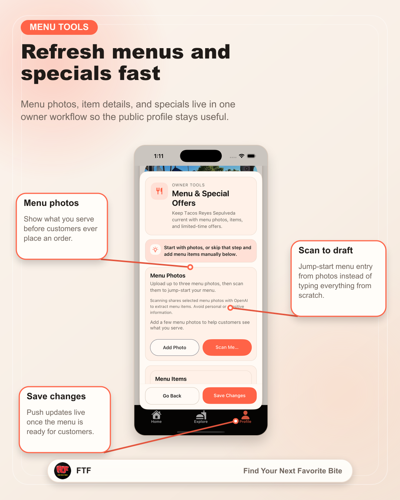
Owners
Claim the profile, keep your menu and schedule current, and share one link that makes your truck easier to trust.
See owner toolsFoodies
Stop bouncing between social posts, maps, and old menus. Use one place to see what is nearby, what looks good, and where to go next.
See foodie discoveryOrganizers
Discover trucks, evaluate fit, and support a smoother path from vendor research to event coordination.
See the organizer walkthroughSee It In Action
The demo below walks through discovery for foodies, live updates for owners, and the planning flow for organizers so the product value is clear in under a minute.
Product Walkthrough
Profiles work best when customers can check menu, schedule, photos, and socials without guessing.
Foodies
The foodie side of the app is about removing friction. The questions are simple: What is near me? Are they open? What do they serve? Is it worth the trip?

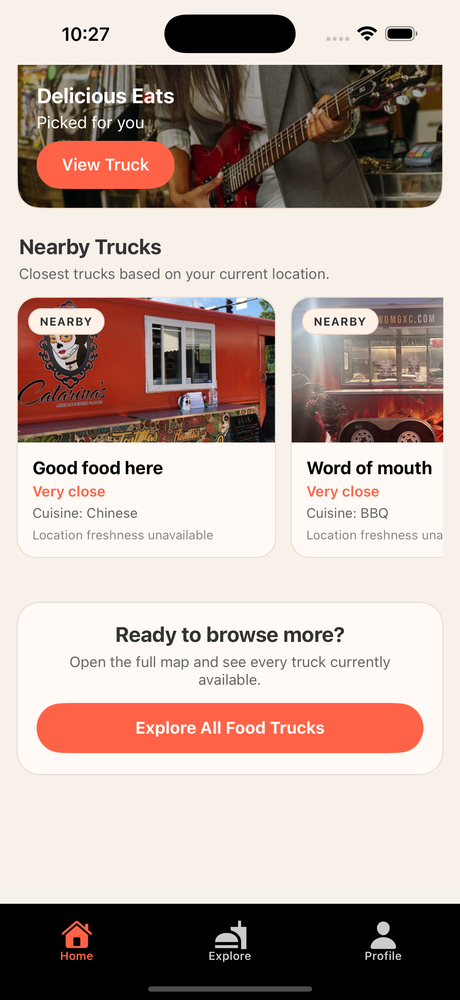
Food Truck Owners
If customers cannot quickly see where you are, when you are serving, and what you are selling, you lose the visit before the order starts. This side of the app is built to make the truck easier to find, easier to trust, and easier to choose.
If you need onboarding help or an owner referral code, start with the claim page or email Foodtruckfinderinfo@gmail.com.
If you want the fastest path, send a note with your truck name and say you want owner setup help.
Open Claim Page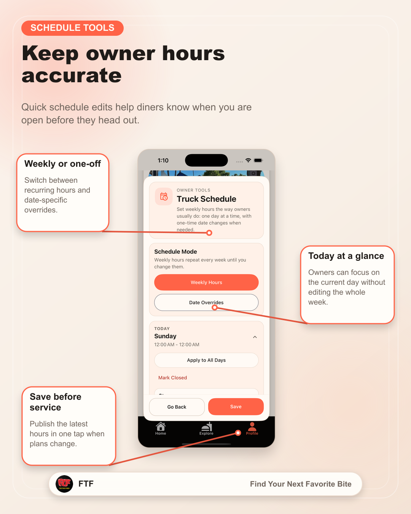
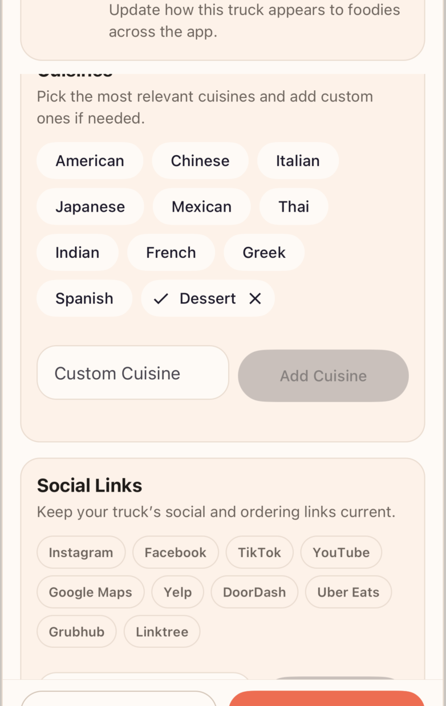
Event Organizers
Organizers need a cleaner path from discovery to outreach. Current truck profiles make it easier to compare cuisine, service details, and event fit before making contact.
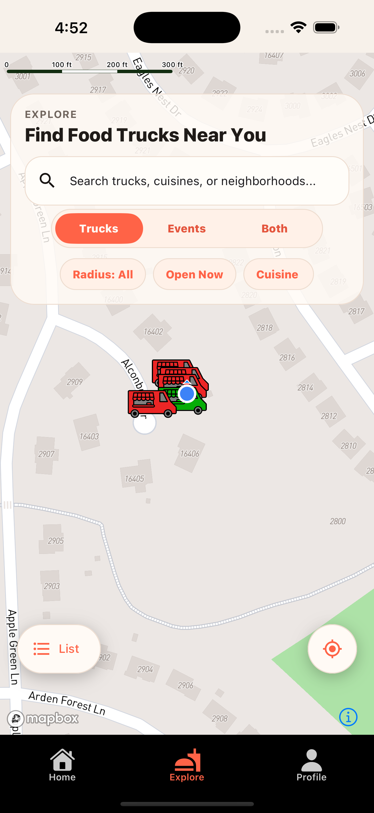
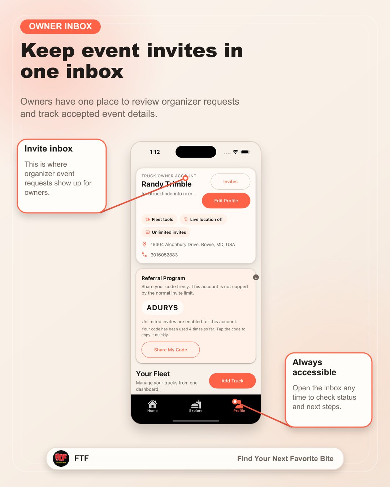
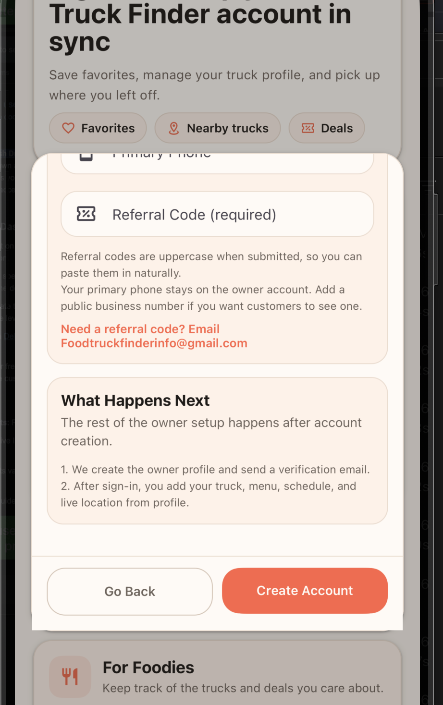
Local Food Truck Discovery
These public pages help foodies, owners, and event organizers find the app from search while truck profiles are claimed and verified.
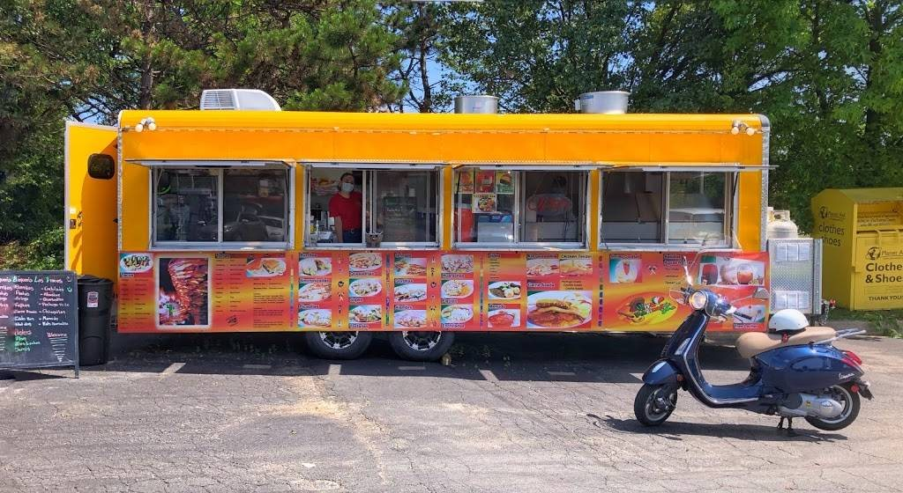
Maryland
Find and follow Baltimore-area food truck profiles as owners claim schedules, menus, and photos.
Explore Baltimore trucks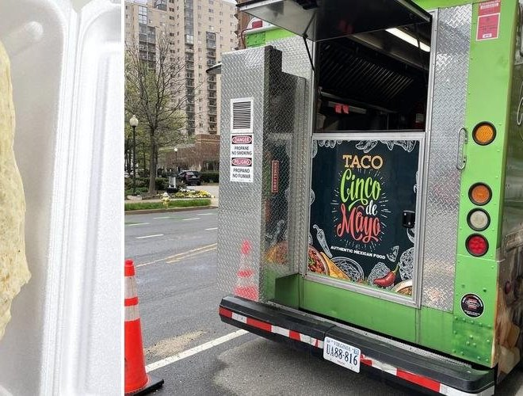
DMV
Use Food Truck Finder to discover DC-area truck profiles and owner-updated details as they become available.
Explore DC trucks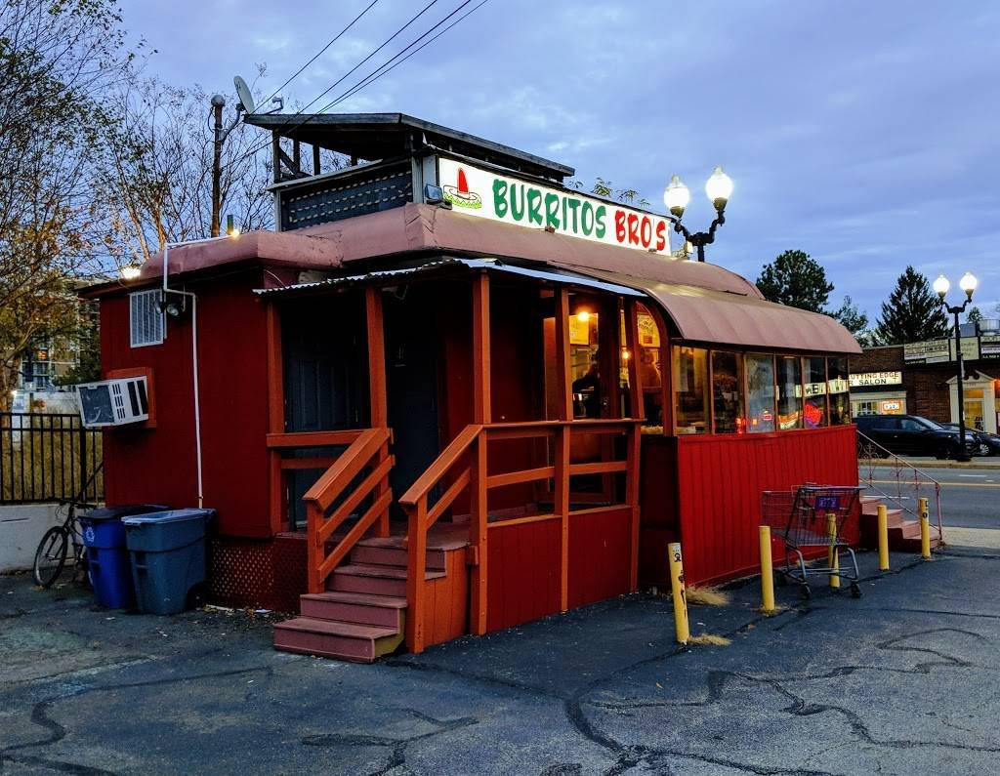
Virginia
Browse Arlington truck profiles and help local owners claim the details customers check first.
Explore Arlington trucks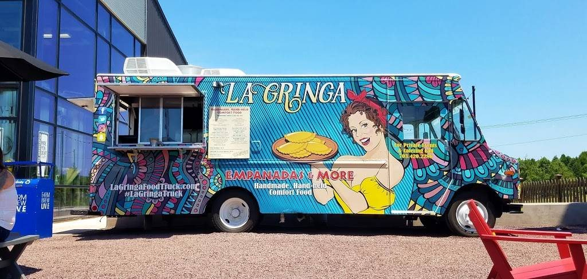
Northern Virginia
Find Northern Virginia profile previews while Food Truck Finder grows owner-claimed listings.
Explore Alexandria trucks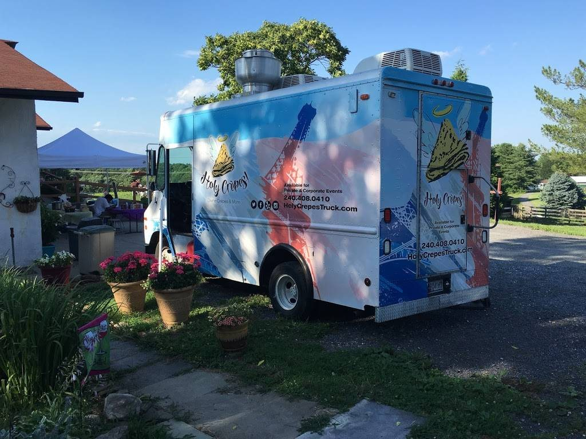
Maryland
Follow Gaithersburg-area truck profiles as owners add schedules, menus, photos, and links.
Explore Gaithersburg trucks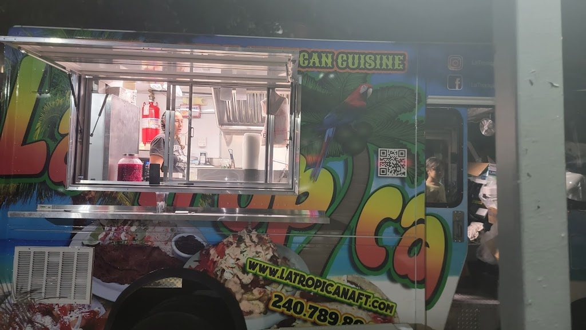
Maryland
Discover Germantown truck profile previews and share claim links with owners who need updates.
Explore Germantown trucksFAQ
No. Foodies use it to discover trucks, owners keep profiles current, and organizers can research event options.
Yes. Owners can keep the location, service schedule, menu, photos, and profile details current.
The owner flow is meant to make stop and schedule changes easier to keep current so customers are not guessing.
Yes. Public truck profiles are built to be shared in social bios, event pages, flyers, and QR codes.
Yes. A stronger profile can show menu items, photos, website, social links, phone, and schedule details.
They can email Foodtruckfinderinfo@gmail.com for onboarding help or referral code support.
Yes. Organizer-facing discovery works better when owner profiles are current, visual, and easy to contact.